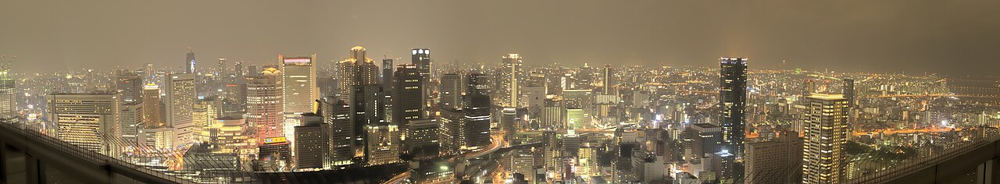

Home
Bem-vindo a Osaka, a «cozinha do Japão»! Uma cidade de néon, castelos e muita comida de rua, onde a tradição e a modernidade se encontram.

Bem-vindo a Osaka, a «cozinha do Japão»! Uma cidade de néon, castelos e muita comida de rua, onde a tradição e a modernidade se encontram.